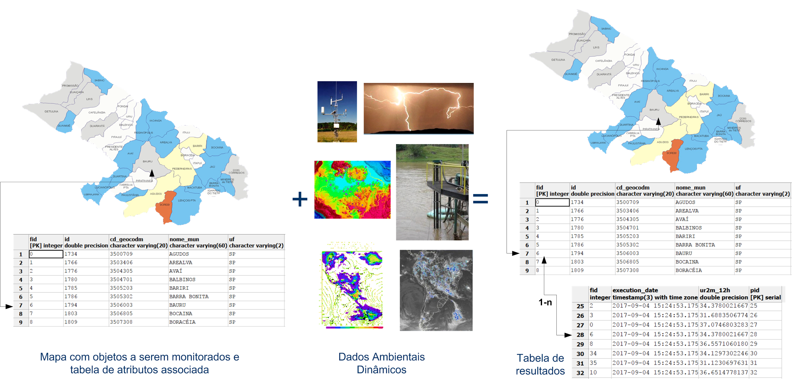
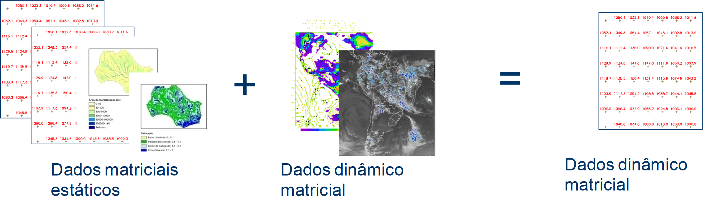
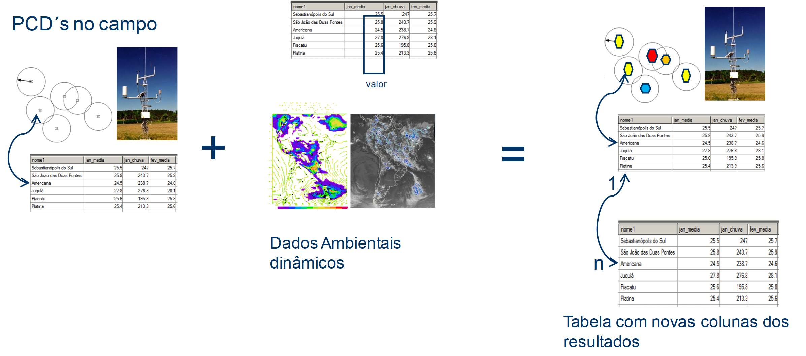

Tipos de Análises
Na plataforma TerraMA2 são quatro tipos de análises suportadas. A seguir uma breve descrição dos tipos:
Veja ainda:
- Análises baseadas em Objetos Monitorados : É o principal tipo de análise utilizada. Neste tipo de análise, um dado estático vetorial (identificado como objeto monitorado), com representação geométrica de pontos, linhas ou polígonos, é sobreposto a um ou mais dados dinâmicos (grades, PCD ou ocorrências) para produzirem novos dados dinâmicos na forma de uma tabela temporal associada ao mapa de objetos. Essa nova tabela armazena a data/hora de execução da análise e os atributos resultantes dos cálculos da análise. Note que o relacionamento entre a tabela do objeto a tabela resultante da análise é de 1 para muitos (1-n). O esquema apresentado na Figura 3.2 mostra que a análise requer como entrada: um mapa vetorial previamente disponível como dado estático, dados dinâmicos cadastrados e um modelo de análise escrito em Python.

Figura 3.2 – Esquema de uma análise com base em objeto monitorado.
Nota: Além dos recursos da linguagem Python uma lista de operadores zonais podem ser utilizados sobre os dados dinâmicos nos modelos de análise do usuário. Atributos do dado estático também podem ser utilizados nos cálculos. Veja exemplo típico desse tipo de análise. Veja sobre Python no anexo A2, na documentação disponível em português em https://wiki.python.org.br ou no site oficial em https://www.python.org/ .
 Objetos monitorados (
Objetos monitorados (  )
)
- Análises baseadas em grades : São análises que tem por objetivo a criação de novas grades dinâmicas com base na aplicação de um modelo matemático sobre dados estáticos e dinâmicos, ambos matriciais. O esquema apresentado na Figura 3.3 mostra que a análise requer como entrada; dados estáticos matriciais (não obrigatório), dados dinâmicos matriciais cadastrados (pelo menos um) e um modelo de análise escrito em Python. Como saída gera-se um novo dado dinâmico matricial. Nota-se que o dado matricial resultante pode servir como entrada para a análise com objetos monitorados.

Figura 3.3 – Esquema de uma análise com base em grades.
Nota: Pelo menos um dos dados deve ser dinâmico de modo que a saída será criada na frequência desse dado ou a intervalos fixos definido pelo usuário. Ajustes deverão ser definidos para grades com diferentes resoluções espaciais e diferentes tamanhos. Um conjunto de operadores sobre grades de observação e previsão estão disponíveis.
Grades (  )
)
- Análises baseadas em PCD : Neste tipo de análise, uma fonte de dados do tipo PCD fornece um conjunto de pontos a serem analisados. Para cada um destes pontos será aplicada individualmente uma regra de análise fornecida pelo usuário para definir um novo valor de atributo. O esquema apresentado na Figura 3.4 mostra que a análise requer como entrada; uma série de dados dinâmicos do tipo PCD e um modelo de análise escrito em Python. Como saída gera-se uma tabela com os resultados da análise.

Figura 3.4 – Esquema de uma análise com base em PCD.
Nota: Além dos cálculos realizados sobre os atributos da PCD, novos atributos podem ser incluídos como resultado do cruzamento com outros dados dinâmicos, sejam matriciais, PCDs ou ocorrências. Neste caso, as PCD´s podem ser consideradas como objetos monitorados para fazer uso dos operadores zonais disponíveis nesse tipo de análise.
PCD (  )
)
- Análises baseadas em Processamento Vetorial : Neste tipo de análise a operação de interseção geométrica permite cruzar um dado estático com um dinâmico, o que produz um novo dado dinâmico vetorial. Além da nova geometria criada pode-se escolher quais atributos dos dados de entrada serão transferidos para dado de saída. O esquema apresentado na Figura 3.5 mostra que a análise requer os dados estáticos e dinâmicos. Como saída gera-se um novo dado dinâmico recortado pela interseção das geometrias de entrada. Note que o atributo de data/hora do dado dinâmico é transferido para o dado de saída, a nova geometria criada e um atributo com área desta em hectares.

Figura 3.5 – Esquema de uma análise com base Processamento Vetorial – tipo Interseção.
Nota: O dado dinâmico de entrada é do tipo ocorrência, assim o dado dinâmico de saída também é uma nova ocorrência. Se ambos dados de entrada são polígonos, somente polígonos de saída serão criados. Se o dado dinâmico é ponto e dado de saída também será ponto.